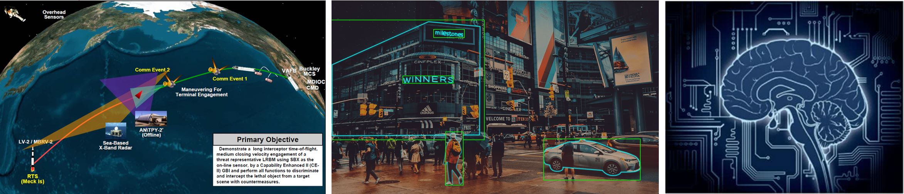
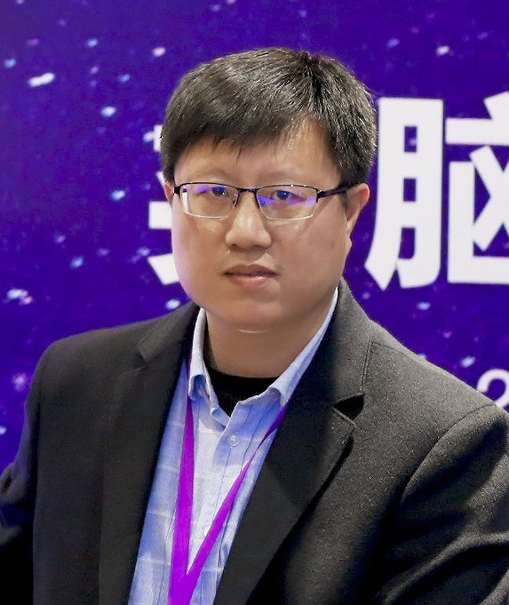
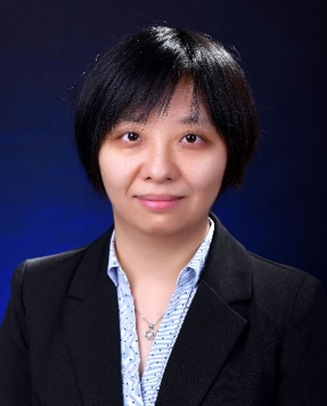
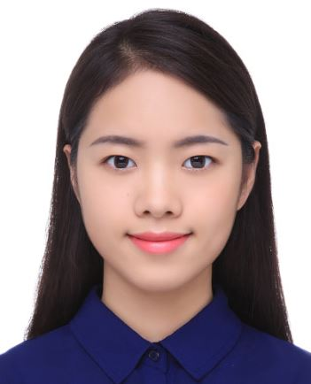
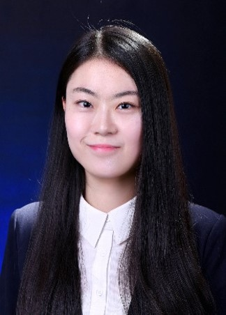
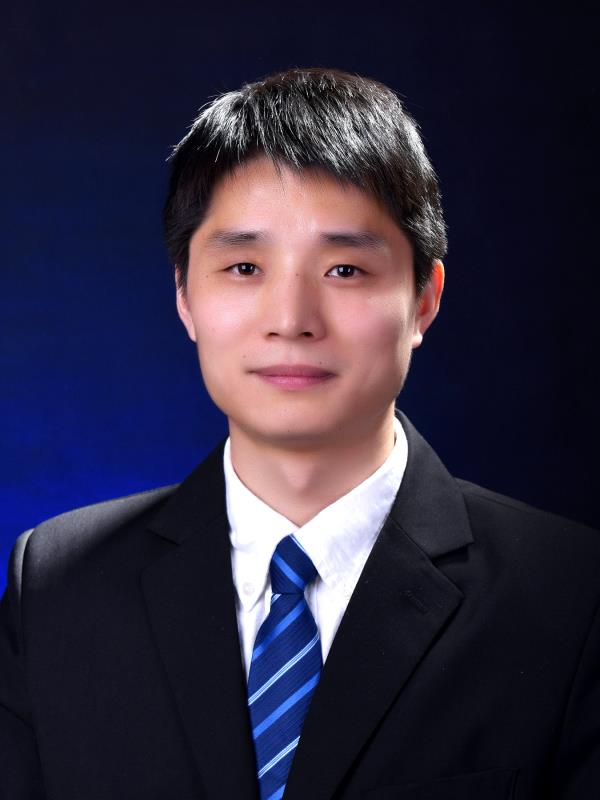

团队简介：
脑与人工智能实验室隶属于“信息融合技术”教育部重点实验室。团队瞄准人工智能国际学术前沿，紧密围绕国家战略需求，在遥感信息智能处理，脑认知与智能计算，视觉智能感知与智能处理等方向开展基础理论研究、关键技术突破与系统集成验证，为人工智能的发展提供新思想、新方法、新技术，是我国人工智能领域高层次人才培养和高水平科学研究的重要基地之一。毕业学生主要就业于百度、阿里、腾讯、商汤科技、海康威视、滴滴等国内高科技公司和国内科研院所。
最新消息:
- 韩军伟教授团队的“高空无人机对地精准观测技术”在“2022吴文俊人工智能科学技术奖”斩获技术发明奖一等奖！
- “视觉智能研究组”新网站现以上线！[WebLink]
- 张鼎文教授在“2022吴文俊人工智能科学技术奖”斩获优秀青年奖！
- 韩军伟教授当选2022年度国际模式识别协会会士（IAPR Fellow）
- 5篇论文被ICCV 2021接收！
- "Learning rotation-invariant convolutional neural networks for object detection in VHR optical remote sensing images" 获得 GRSS Highest Impact Paper Award!
- "A unified metric learning-based framework for co-saliency detection" 获得 IEEE TCSVT Best Paper Award!
- “Weakly Supervised Object Localization and Detection: A Survey”被IEEE TPAMI接收。
- “Adaptive Neighborhood Metric Learning”被IEEE TPAMI发表。
- “Strengthen Learning Tolerance for Weakly Supervised Object Localization”被CVPR接收。
- “Weakly Supervised Video Salient Object Detection”被CVPR接收。
- 刘念博士的博士学位论文《基于深度神经网络的图像显著性检测关键技术研究》获得中国图象图形学学会优秀博士学位论文奖！
- “Weakly Supervised Object Detection Using Proposal- and Semantic-Level Relationships”被IEEE TPAMI接收。
- T-MM SI on Weakly Supervised Learning for Image and Video Understanding (Submission deadline: Augest 2021)
- T-CSVT SI on Advanced Machine Learning Methodologies for Large-Scale Video Object Segmentation and Detection (Submission deadline: December 2020)
- 针对RGB-D SOD任务，我们创建了一个大规模、场景丰富、深度图质量良好、极具挑战的ReDWeb-S数据集，欢迎大家使用。
- “Revisiting Anchor Mechanisms for Temporal Action Localization”被IEEE TIP接收。
- “Weakly-Supervised Learning of Category-specific 3D Object Shapes”被IEEE TPAMI接收。
- “Evaluation of Saccadic Scanpath Prediction: Subjective Assessment Database and Recurrent Neural Network Based Metric”被IEEE TPAMI接收。
团队成员:
| 成员 | 介绍 | 成员 | 介绍 |
|---|---|---|---|
|  | 韩军伟：教授、博导，实验室主任，IET Fellow。在领域顶级国际期刊或会议如：Proceedings of the IEEE，IEEE TPAMI，CVPR，ICCV，MICCAI等发表学术论文百余篇；论文被引用近2万次，培养多名博士生获得中国图象图形学学会优秀博士论文奖。同时入选科睿唯安“全球高被引科学家”和爱思唯尔“中国高被引学者”。授权国家发明专利20余项。担任IEEE TNNLS、IEEE TCSVT、IEEE TMM等多个人工智能领域顶级期刊编委，担任领域权威国际会议CVPR、ICPR、ACCV等区域主席。获陕西省科学技术一等奖、教育部自然科学二等奖等多项奖励。 研究方向：人工智能、多媒体信息处理、模式识别、脑成像分析。Email:junweihan2010@gmail.com | 程 塨：研究员、博导,入选陕西省青年科技新星。在领域顶刊和顶会如Proceedings of the IEEE、IEEE TPAMI、IEEE TIP、CVPR等发表论文30余篇，10余篇论文入选ESI高被引论文/热点论文，Google 学术引用4700余次。主持10余项省部级以上科研项目。获得2017年教育部自然科学奖二等奖(3/5)和2018年陕西省科学技术奖一等奖(4/8)，获得IEEE GRSL 2017&2018年度最佳审稿人奖以及IEEE JSTARS 2018年度最佳审稿人奖。担任IEEE GRSM、IEEE JMASS、IEEE JSTARS等多个SCI期刊的副编辑/客座编辑。 研究方向：深度学习、计算机视觉、高分辨率遥感图像理解。主页：www.escience.cn/people/gongcheng | |
 |
张鼎文：教授，在西北工业大学自动化学院获得学士、博士学位，2015-2017年赴美国卡耐基梅隆大学机器人系访问，研究方向为受脑学习启发的机器视觉处理。具体来说，主要围绕弱、半、无监督下的目标检测、分割、视频分析、遥感和医学影像处理等方向的研究工作，在领域顶刊和顶会如IEEE TPAMI、IJCV、IEEE TIP、CVPR、NIPS、ICCV等发表论文30余篇，10余篇论文入选ESI高被引论文/热点论文，Google 学术引用3700余次。主持、参与10余项省部级以上科研项目。担任IEEE TCSVT、IEEE TMM的客座编辑。个人主页: [Link]. 团队主页: [Link]. | 赵世杰：副研究员，近年来在脑成像分析、人工智能算法等领域发表国际期刊和会议论文30篇，其中：SCI收录15篇，2区及以上12篇，顶级会议论文7篇，获多媒体处理领域顶级会议ICME 2016最佳学生论文提名。主持国家自然科学基金等国家和省部级项目5项，参与自然基金重点项目、国防科技创新特区项目等国家级课题5项。担任Frontier in Neuroscience Review Editor，医学图像计算机青年研讨会(MICS)执行委员；中国图象图形学会视觉认知与计算专委会委员。研究方向：脑成像分析、多媒体处理、人工智能算法。Email:shijiezhao666@gmail.com | |
| 姚西文：副研究员，近年来在领域顶级国际期刊和国际会议如IEEE TPAMI、IEEE TIP、IEEE TGRS、ACM MM等发表论文26篇，其中1篇论文荣获陕西省第十四届自然科学优秀学术论文二等奖，5篇论文入选ESI高被引和热点论文，Google Scholar引用1276次。授权国家发明专利9项。主持7项省部级以上科研项目。西北工业大学优秀博士论文获得者。目前担任中国图象图形学学会遥感图像专业委员会委员，ISPRS、TGRS等20余种国际期刊审稿人。研究方向：深度学习、计算机视觉、遥感图像处理。 主页：https://teacher.nwpu.edu.cn/yaoxiwen.html |  | 蔡晓妍：工学博士，副教授，硕士生导师。主持国家自然科学基金面上项目、国家自然科学基金青年基金、教育部人文社会科学基金、陕西省自然基础研究计划等科研项目7项；参与国家242信息安全计划项目、陕西省重点研发项目3项；申请发明专利4项；发表学术论文23篇，其中SCI收录论文16篇。研究方向：自然语言处理、信息检索、图像理解。主页：https://teacher.nwpu.edu.cn/m/2016010059.html | |
|  | 黄钟泠：工学博士，副教授。近年来在领域高水平期刊和国际会议例如IEEE-TGRS、ISPRS JPRS等发表论文十余篇，一篇论文入选ESI高被引论文，Google Scholar引用共227次。目前担任TGRS、ISPRS、GRSM等十余个国际期刊审稿人，参与多个国家自然科学基金项目、装发预研项目等。研究方向：合成孔径雷达图像理解、目标识别、微波遥感、深度学习。E-mail: huangzhongling@nwpu.edu.cn |  | 夏 辰：工学博士，助理教授。在IEEE-TPAMI, IEEE-TNNLS，IEEE-TIP等高水平SCI国际期刊及会议发表论文8篇。获国家青年自然基金一项、博士后基金面上项目一项、陕西省科学自然基金一项。“基于重构的自底向上视觉注意模型研究”的博士论文获得首届中国电子教育学会优秀博士论文提名奖以及2019级西安电子科技大学优秀博士论文。基于眼动的自闭症识别论文获得ICIMH2020最佳论文奖。同时申请及授权专利4项。研究方向：视觉注意建模、显著性估计、扫视路径预测及在自闭症识别中的应用、深度学习。Email:cxia@nwpu.edu.cn |
|  | 杜 磊：助理教授、博导。近5年以第一作者在领域顶级期刊和顶级会议如Bioinformatics、IEEE TMI、Medical Image Analysis、ISMB、IPMI、MICCAI、BIBM等发表论文30余篇，获生物信息学领域权威国际会议BIBM 2018“最佳论文奖”。主持国家自然科学基金面上项目、国家自然科学基金青年项目等省部级以上科研项目9项，参与国家基金重点项目2项。担任领域权威国际会议BIBM Session Chair、CCF生物信息学专委委员、CAA智能健康与生物信息学专委委员。研究方向：机器学习、模式识别、影像基因组学（影像遗传学）、医学图像处理、生物信息学。Email：dulei@nwpu.edu.cn，主页：https://teacher.nwpu.edu.cn/dulei.html |